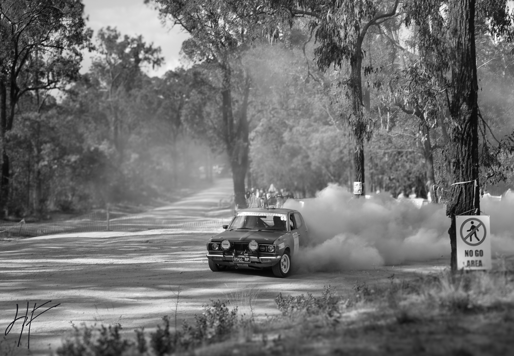

Hugh Fletcher Photography
Stories in
motion.
Photography focused on trains, transport, places and the moments that make them worth remembering.
Explore the work ↓Selected work
A growing collection.
A visual archive from Melbourne and beyond — built around curiosity, movement and the details you might otherwise miss.
About
Photography with a sense of place.
I’m Hugh, a photographer based in Melbourne, Australia. My photography currently centres around trains and transport, while leaving room for the collection to grow into new subjects.
I shoot with a Nikon D7000 and enjoy the technical side of photography just as much as being out looking for the next frame.
Get in touch →Contact